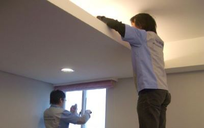
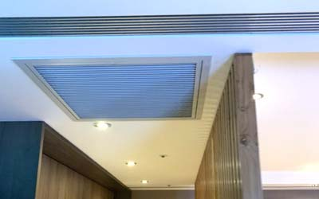
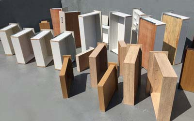
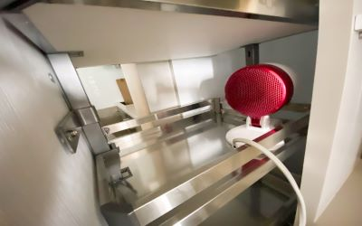
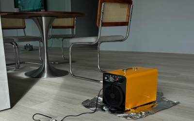
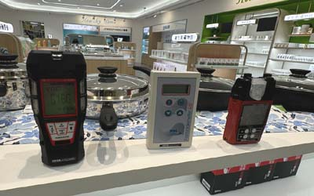

世屋除甲醛
除甲醛評估上述說明還須考慮到背景值，我們施工法是物理法及化學法雙管齊下，先將甲醛快速釋放，再用酵素、甲殼素、空氣清淨機用光觸媒、奈米材料等，依照不同建材施工，有上述問題請洽我們。
■植物具淨化室內空氣，去除甲醛能力，但是以現實面而言，其能力是不夠，除非室內面積有1/2以上覆蓋率，那才有辦法將除室內甲醛。 |
| ■植物能夠除甲醛主要是其產生之植物酵素，但必須行光合作用，目前室內照明大多是LED，其部分波長明顯不足， |
| ■實際測定：在許多文獻中植物可除甲醛，是不容置疑，但是其實驗方法有誤，室內甲醛是24小時不斷釋放，但實驗方法只用定量甲醛實驗，與現實狀況是不同的。 |

| ■ 最優最佳、最便宜，在24小時情況續通風，至少五、六個月，且有強制排風扇，室溫在26度以上，如室內三面環窗，可加速氣流散發，則可縮短工期至三個月，如果只有單面窗那效果可能會降低50-80%。 |
| ■ 須注意防超細塵紗窗會影響換氣，其換氣大約只有傳統紗窗10-40%能力，且每周必須清潔以確保其通風能力。 |
| ■ 剛裝潢前一個月，如果在冬天使用此法，其空間在正常使用下還是會微量超標。 |

| ■ 如果是全新裝潢濃度高，此時新風換氣系統效果有限，建議以開窗為先，但已長期而言是不錯且安全之選擇。 |
| ■新風系統其換氣能力，通常在裝潢時期配線，因需走彎道且風管過長，彎折距離等損耗因素，通常其上面標示之數據能力大約只有30-60%效果，且這是在開啟最大風涼時，尤其開至最弱時換氣能力不足，只有標示的10%的可能性非常高。 |
| ■有新裝潢時配合使用正壓原理讓污染氣體自然排氣效果較更佳。 |

| ■ 藉由太陽其紅外線熱能將其木材內部甲醛加熱乾燥蒸發，但此發會侷限於許多裝潢是無法曝曬，因此可用其他物理加熱法。 |
| ■ 物理(加速釋放甲醛為主)此為最花時間但最能夠根除問題，但需要同時開窗，如果只是密閉加熱那只是讓空間加速至甲醛最高濃度之平衡，則效果較差。 |
| ■ 雞尾酒法除甲醛施工法，可階梯式降低，也必須利用到濕度，這方法簡單說是利用高低溫濕度以及通風來反覆使甲醛溶入水中再散發至空氣中最後排出。另外所謂的超音波法，其實只是把除水分子或是甲醛材料藉由震盪霧化，能夠所有物體都能噴到，其宣傳效果會大於實際效果。 |

| ■ 在大空間中，無法主動吸附，效果有限，但在體積小及密閉箱體空間效果較佳，但須注意當溫度達30度以上，濕度在70以上，可能會將其原本吸附飽和之吸附體轉為釋放體，將甲醛釋放出。 |
| ■ 依照濃度及溫度來判別其吸附體所需置換時間通常在數周間，取決於其吸附體會飽和率，但第2次置換時間會比第一次置換時間長，因此需要常更換。 |
| ■ 以性價比而言，活性碳效果佳，但活性碳之好壞也區分很多，取決於碘值，更重要是其包裝是否為密封，否則效果大大降低甚至無效。 |
| ■ 其他高效率吸附材料，通常不會出現在市售上，且價格昂貴，通常是半導體業使用材料，包裝都為真空包裝，大多為德國或日本製造為主。 |

| ■優點是可以順道除菌，利用其氧化能力將甲醛氧化，臭氧優點是半衰期快在正確合理使用法不會殘留。 |
| ■缺點是會產生二次汙染造成氣喘，呼吸道發炎，需連續2-3個月24hr開啟，因此人不能在室內，高濃度臭氧有可能會氧化電器或是金屬及導致特殊漆變色。 |
| ■使用臭氧必須知道臭氧會氧化電器、金屬，尤其在高精密半導體無塵室是有規範限制，但在一般場所，合理正確使用，則是安全無慮，以高濃度每天使用2-6小時，大約半年多才會影響到甲醛數值，但使用間斷法，也就是一小時開10-15分，室內濃度在一小時內會降解下趨近背景值再次開啟，則大約1年多後才會有影響。 |

| ■ |
除甲醛評估上述說明還須考慮到背景值，我們施工法是物理法及化學法雙管齊下，先將甲醛快速釋放，再用酵素、甲殼素、空氣清淨機用光觸媒、奈米材料等，依照不同建材施工，有上述問題請洽我們。